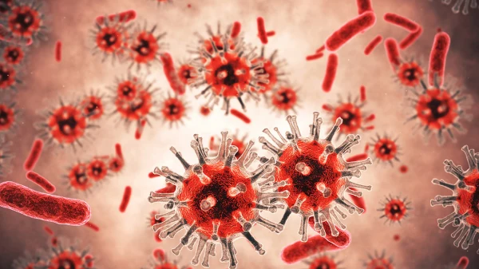
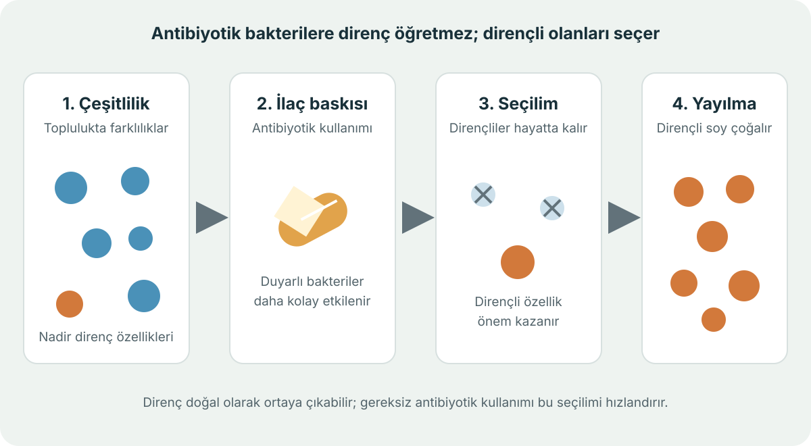

Antibiyotik direnci, mikropların değil, insan bedeninin “ilaca alışması” değildir. Direnç bakterilerin bir özelliğidir: Bir bakteri, normalde onu durdurması beklenen bir antibiyotiğin etkisine rağmen hayatta kalabilir ve çoğalabilir. Toplulukta dirençli bakteriler kaldığında, ilaç onları seçmiş olur; sonra bu bakteriler çoğalarak ya da direnç genlerini paylaşarak yayılabilir. Gereksiz antibiyotik kullanımı bu seçilime daha fazla fırsat verir, ama direncin tek nedeni değildir.
Önce şu ayrımı yapalım: direnç insanda değil, bakteridedir
Antibiyotikler, bakterilerin neden olduğu belirli enfeksiyonları tedavi etmek için kullanılır. Bir bakteri topluluğundaki her hücre birbirinin kopyası değildir. Üreme sırasında oluşan genetik değişiklikler veya başka bakterilerden edinilen genler, bazı bakterilere belirli ilaçlara karşı avantaj sağlayabilir. Antibiyotiğe maruz kalınca duyarlı bakteriler ölür ya da çoğalamaz; dirençli olanlar ise hayatta kalıp sayıca artabilir.
Bu nedenle antibiyotik direnci, kişinin bağışıklık sisteminin güçlenmesi veya vücudunun bir ilaca alışması anlamına gelmez. Bakterinin genetik yapısı değişir; dirençli bakterinin kendisi, enfeksiyona yol açtığında tedaviyi zorlaştırabilir. Üstelik direnç tek parça bir kalkan değildir: Bir bakteri bir antibiyotiğe dirençliyken başka bir ilaca duyarlı olabilir. Hangi tedavinin işe yarayacağını enfeksiyonun yeri, bakterinin türü ve laboratuvar bulguları belirler.[1]
Antibiyotik direnci nasıl seçiliyor?
Direnç, bakterilerin hayatta kalmak için plan yaptığı bir süreç değildir. Bakteri popülasyonlarında genetik çeşitlilik zaten bulunabilir; yeni değişiklikler de mutasyonlarla ortaya çıkabilir. Antibiyotik kullanıldığında, ilaca duyarlı bakteriler üzerindeki baskı artar. Direnç özelliği taşıyanlar bu koşulda daha sık hayatta kalır, çoğalır ve topluluk içinde daha yaygın hâle gelir. Evrimde doğal seçilimin temel mantığı budur.

Antibiyotik direncinin evrimi çok daha eski ve kapsamlı bir olgudur; antibiyotiklerin keşfinden önce de çevrede direnç mekanizmaları vardı. Modern ilaçların insanlar ve hayvanlarda yoğun kullanımı ise bu mekanizmaların seçilmesine ve yayılmasına yeni fırsatlar sağladı. Julian ve Dorothy Davies'in hakemli derleme makalesi, direncin kökenlerini, mikrobiyal genetik kapasiteyi ve bakteriler arasında gen aktarımını birlikte ele alır.[2]
Bakteriler ilacın etkisinden nasıl kaçabiliyor?
Direnç tek bir yöntemle oluşmaz. Bakterinin sahip olduğu genler, hangi ilaca maruz kaldığı ve hücrenin yapısı hangi savunmanın işe yarayacağını belirler. En sık incelenen mekanizmalardan bazıları şunlardır:
- İlacı parçalamak ya da etkisizleştirmek: Bazı bakteriler antibiyotiği parçalayabilen enzimler üretir. Örneğin bazı Klebsiella pneumoniae suşlarının ürettiği karbapenemaz enzimleri, karbapenem grubu ilaçları etkisizleştirebilir.
- İlacın hedefini değiştirmek: Antibiyotik bakterinin belirli bir yapısına bağlanarak çalışıyorsa, o hedefteki değişiklik ilacın bağlanmasını zorlaştırabilir.
- İlacın hücreye girişini azaltmak: Hücre zarı veya giriş kanallarındaki değişiklikler, antibiyotiğin bakterinin içine ulaşmasını sınırlayabilir.
- İlacı dışarı pompalamak: Bazı bakteriler, hücreye giren antibiyotiği dışarı atan pompalar kullanabilir.
Direnç genleri bakterinin kendi soyunda aktarılabileceği gibi, bazı durumlarda plazmid adı verilen DNA parçalarıyla başka bakterilere de geçebilir. Böylece antibiyotikle hiç karşılaşmamış bir bakteri bile, uygun koşullarda direnç geni edinebilir. Bu aktarım her bakteri arasında ve her koşulda gerçekleşmez; ancak hastaneler, topluluklar, hayvanlar ve çevre arasındaki bağlantılar dirençli mikropların yayılımını izlemeyi önemli kılar.[1][2]
Gereksiz kullanım neden sorun yaratıyor?
Antibiyotik kullanımı, bakterilerin karşılaştığı seçilim baskısını artırır. İlaca gerçekten ihtiyaç olmayan durumlarda antibiyotik almak, kişiyi viral enfeksiyondan iyileştirmez; buna karşılık vücuttaki duyarlı bakterileri etkileyip dirençli olanların avantaj kazanmasına zemin hazırlayabilir. Nezle ve grip gibi virüslerin neden olduğu hastalıklarda antibiyotikler işe yaramaz. Antibiyotiklerin gerekli olduğu bakteriyel enfeksiyonlarda ise uygun ilacı seçmek, gereksiz geniş spektrumlu kullanımdan kaçınmak ve tanıya göre hareket etmek önemlidir.
Direnç yalnızca bireysel bir kararla açıklanamaz. Antibiyotiklerin insanlar ve hayvanlarda nasıl kullanıldığı, sağlık kurumlarında enfeksiyonların önlenip önlenmediği, tanı testlerine erişim, temiz su ve hijyen koşulları, ilaçlara erişim ve atık yönetimi de bu tabloyu etkiler. Dünya Sağlık Örgütü, uygunsuz ve aşırı kullanımın yanı sıra enfeksiyon önleme eksikliklerini ve temiz suya erişim sorunlarını da direncin gelişmesi ve yayılmasında etkili faktörler arasında sayıyor.[3]
Bir antibiyotiğin her hastalıkta “daha güçlü” olduğu düşüncesi de yanıltıcıdır. İlaç seçimi enfeksiyonu oluşturan bakteriye, enfeksiyonun yerine ve hastanın durumuna bağlıdır. Artan direnç, bir grup antibiyotiğin etkisini azaltabilir; bu durum tüm antibiyotiklerin bir anda işe yaramaz hâle geldiği anlamına gelmez.
Direnç sağlık hizmetlerini nasıl etkiliyor?
Bir enfeksiyon ilk seçilen antibiyotiğe yanıt vermediğinde sağlık ekibi ek testlere ve alternatif tedavilere ihtiyaç duyabilir. Bu durum tedavinin gecikmesine, hastanede kalışın uzamasına ve daha pahalı ya da yan etkileri daha ağır olabilen ilaçların kullanılmasına yol açabilir. Bazı enfeksiyonlarda seçenekler çok azalabilir. Sorun yalnızca enfeksiyon hastalıklarıyla sınırlı değildir: Ameliyatlar, organ nakilleri ve kanser tedavileri gibi işlemler, oluşabilecek bakteriyel enfeksiyonları önleme ve tedavi etme imkânına da bağlıdır.[1][3]
Ölçeği anlamak için Dünya Sağlık Örgütü'nün 2025 gözetim raporuna bakalım. Rapor, 2023'e ait 23 milyondan fazla laboratuvarla doğrulanmış enfeksiyon kaydını ve 104 ülkeden gelen bildirimi değerlendiriyor; analiz edilen yaygın bakteriyel enfeksiyonların yaklaşık altıda birinde antibiyotik direnci saptandığını bildiriyor. Bu sayı bütün ülkelerdeki bütün enfeksiyonların tek tek sayıldığı anlamına gelmiyor: Raporlanan örnekler, laboratuvar kapasitesi ve ülkelerin veri kapsamı tahminlerin nasıl yorumlanması gerektiğini etkiliyor.[4]
Başka bir ölçüm, sorunun ölüm yükünü göstermeye çalışıyor. The Lancet'te yayımlanan GBD 2021 sistematik analizine göre, bakteriyel antimikrobiyal direnç 2021'de dünya çapında 4,71 milyon ölümle ilişkiliydi. “İlişkili” ölüm, direncin tek başına o ölümlerin tamamına neden olduğu anlamına gelmez; bu ifade, dirençli enfeksiyonların bulunduğu durumlarda hesaplanan toplam yükü anlatır. Araştırmacıların “doğrudan atfedilen” ve “ilişkili” ölüm ölçümleri birbirinden farklıdır.[5]
Direnç sağlık sisteminin işleyişini de zorlar. Daha uzun yatışlar yatak kapasitesini ve sağlık çalışanlarının zamanını etkiler; ek testler ve daha karmaşık tedaviler maliyeti yükseltebilir. Etkiler bütün ülkelerde aynı değildir. Laboratuvar tanısı, uygun ilaç ve enfeksiyon kontrolü için kaynakların kısıtlı olduğu yerlerde dirençli enfeksiyonların sonuçları daha ağır olabilir.
Direnci yavaşlatmak için ne yapılabilir?
Antibiyotiklerden vazgeçmek çözüm değildir; doğru antibiyotik, gerektiği yerde hayat kurtarır. Amaç, onları ihtiyaç olmadığında kullanmamak ve gerekli olduğunda doğru tanı ile, sağlık profesyonelinin belirlediği şekilde kullanmaktır. Antibiyotiği başkasına vermek, artan ilacı saklayıp daha sonra kendi kendine başlamak ya da doz ve süreyi danışmadan değiştirmek güvenli bir yaklaşım değildir. Özellikle tedavi süresi konusunda genel tavsiyeler yerine, kişiye reçete edilen talimat izlenmelidir.
Sağlık kurumlarında hızlı ve doğru tanı, enfeksiyon kontrolü, el hijyeni, aşılarla önlenebilir hastalıkların azaltılması ve antibiyotik kullanımının düzenli izlenmesi birlikte önem taşır. Hayvan sağlığında da antibiyotikler veteriner gözetiminde ve ihtiyaç olduğunda kullanılmalı; gıda üretimi ve çevredeki direnç yayılımı izlenmelidir. Dünya Sağlık Örgütü bu yaklaşımı insan, hayvan, bitki ve çevre sağlığını birlikte değerlendiren “Tek Sağlık” çerçevesinde ele alıyor.[3]
Herkes için düşen pay, antibiyotik gerekip gerekmediğine kendi başına karar vermek değil; sağlık uzmanına danışmak, virüs kaynaklı hastalıklarda antibiyotiğin işe yaramadığını bilmek ve enfeksiyonların yayılmasını önleyen aşı, hijyen ve güvenli gıda uygulamalarını desteklemektir. Mikrobiyotanın vücuttaki rolü hakkında daha fazla bilgi için bağırsak mikrobiyomu yazımıza da göz atabilirsiniz.
Antibiyotik direnci bir gecede ortaya çıkan tek bir “süper mikrop” hikâyesi değil. Bakterilerin genetik çeşitliliği, ilaçların yarattığı seçilim baskısı ve enfeksiyonların insanlar, sağlık kurumları, hayvanlar ve çevre arasında yayılması yıllar içinde iç içe geçiyor. Antibiyotikler doğru yerde kullanıldığında gücünü korumaya yardımcı olur; ihtiyaç olmadığında kullanıldıklarında ise bu gücü aşındıran koşullara katkı sunabilirler.
Kaynaklar ve ileri okuma
- U.S. Centers for Disease Control and Prevention (CDC), “About Antimicrobial Resistance”, 25 Ekim 2026. Direncin bakterilerde nasıl geliştiği, yayılımı ve sağlık hizmetlerine etkisi.
- Julian Davies ve Dorothy Davies, “Origins and Evolution of Antibiotic Resistance”, Microbiology and Molecular Biology Reviews, 74(3), 2010, s. 417–433. Direnç mekanizmaları ve evrimi üzerine hakemli derleme.
- World Health Organization (WHO), “Antimicrobial resistance”, 16 Temmuz 2026. Direncin sağlık ve toplumsal etkileri, aşırı kullanım ve önleme yaklaşımları.
- World Health Organization, Global antibiotic resistance surveillance report 2025, 13 Ekim 2025. GLASS gözetim sistemi; rapor 104 ülkeden 2023 verilerini ve 23 milyondan fazla doğrulanmış enfeksiyon kaydını inceliyor.
- GBD 2021 Antimicrobial Resistance Collaborators, “Global burden of bacterial antimicrobial resistance 1990–2021: a systematic analysis with forecasts to 2050”, The Lancet, 404(10459), 2024, s. 1199–1226. Küresel ölüm yüküne ilişkin sistematik analiz; “ilişkili” ve “atfedilen” ölüm kavramlarını ayrı ölçer.
Bu yazı genel bilimsel bilgilendirme içindir; tanı, antibiyotik seçimi veya kişisel tedavi önerisi yerine geçmez. Antibiyotik kullanımı ve tedavide değişiklikler için sağlık profesyoneline danışın.